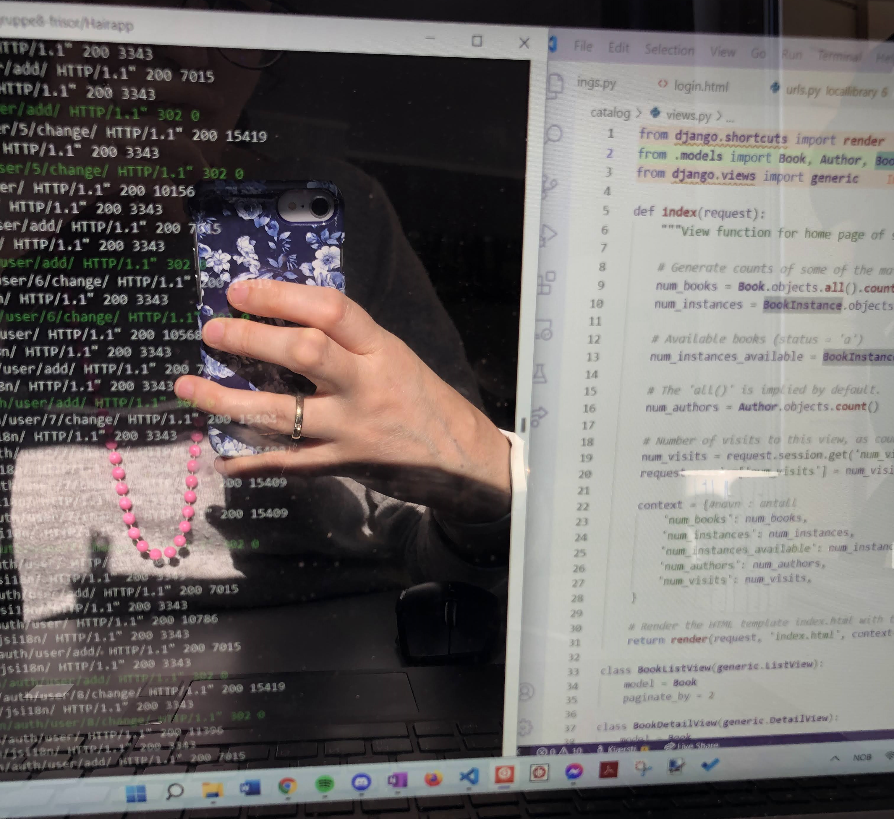

Til hovedsiden
Personlig
- Kjærsti Løkholm Bergli
- Født: 12.03.1982
- Gift, to barn
- Bor på Tromsøyas best west

Et bilde sier mer enn 1000 ord sies det. La meg forklare noe av det du ser her.
- Jeg trives nært naturen, men også utrolig godt med å jobbe foran en PC. Jeg er vokst opp på 80 og 90 tallet
med PC og har
hele livet vært opptatt av it-løsninger. Godt brukergrensesnitt, digitalisering, effektvisiering og pent
design.
- Jeg har gullring på høyre finger. Jeg er gift med min store kjærlighet (han er også utvikler) og vi har to
skjønne
barn,
rekkehus, hybridbil og lever det gode liv med familie og venner rundt oss.
- Jeg har treningsklokke på armen. Jeg trenger jevnlig, kondisøkter med turer i skogen vinter og sommer,
styrke,
bassengtrening
og yoga. Treninga gir energi og glede i hverdagen!
- Et par krokete fingre som konsekvens av mange år med leddgikt da jeg var yngre. Jeg har vært veldig lite
plaget de
siste årene og
har lært meg koding uten å bruke hendene i perioder der smerter har hindret tasting. Tuva og Talon gjør det
mulig å
jobbe
effektivt med kun å bruke stemmen! Jeg brenner for å finne løsninger for å kunne jobbe på videre og ikke
sette seg
ned når man
møter hindringer.
- Jeg jobber i VScode og Ubuntu!